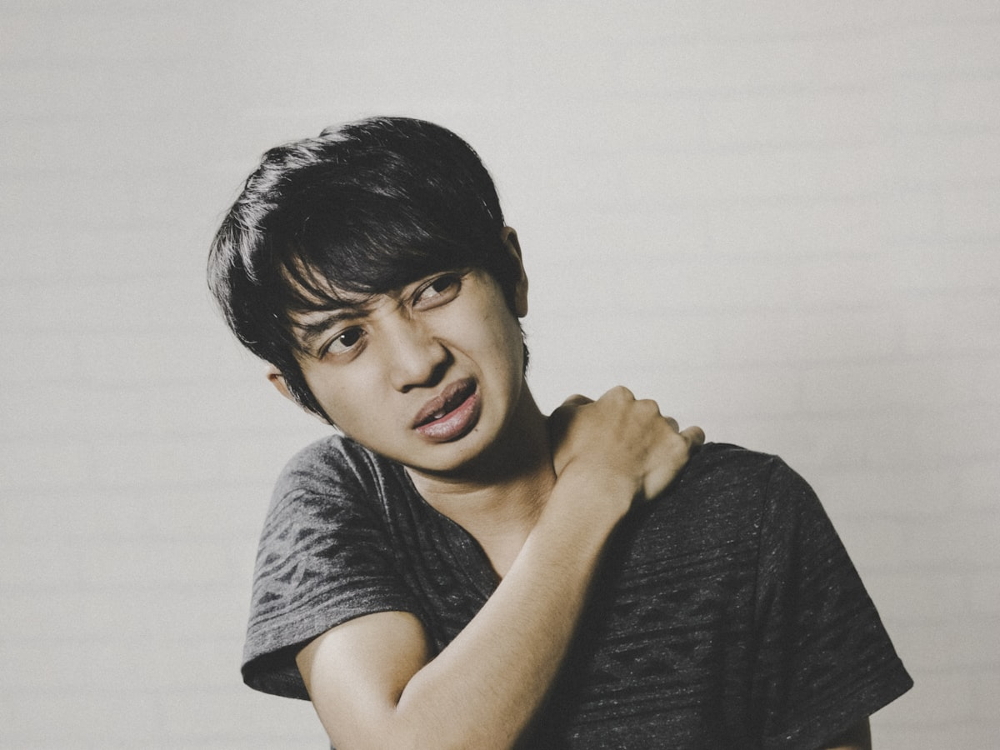
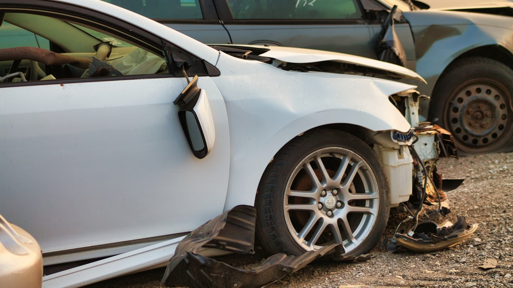
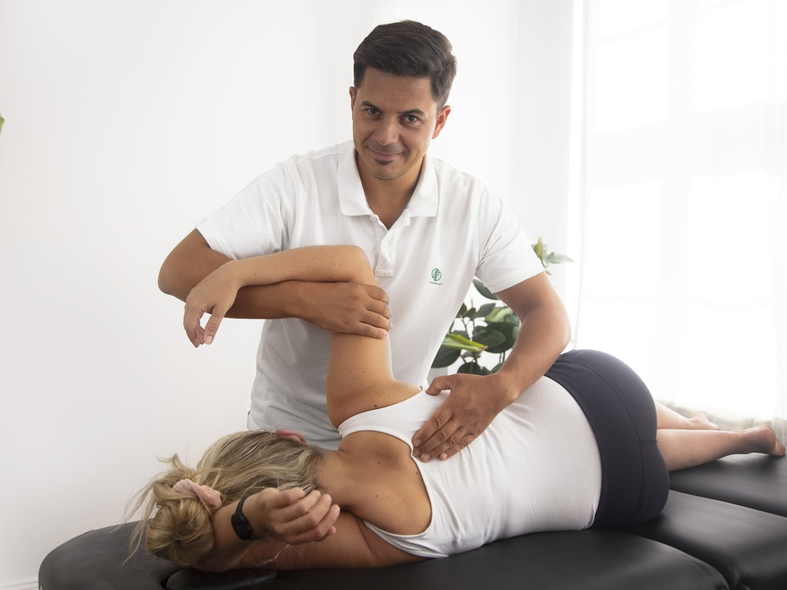
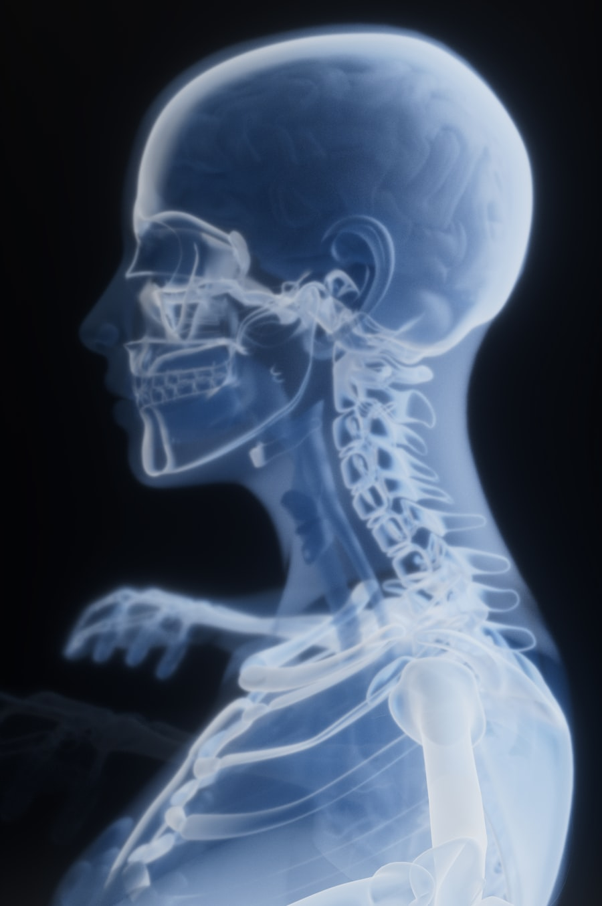
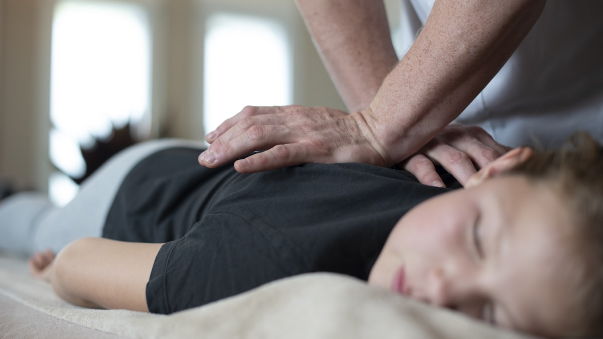

「レントゲンでは異常なし」でも、つらい症状には理由があります。
※窓口負担0円は自賠責保険が適用された場合です。過失割合などにより異なるケースがあります。
まずはLINEで無料相談ください
「保険のことが分からない」「痛みが出てきた」だけでもOK。
お近くの店舗のLINEからどうぞ。24時間受付しています。
CHECK

WHY

むちうちの症状は、事故から数日〜数週間たってから現れることが少なくありません。「大したことない」と放置すると、首・肩・腰の痛みやだるさが長引きやすくなります。後遺症を残さないためにも、早期のケアが大切です。
事故から日数が空いて受診すると、「そのケガは本当に事故が原因なのか」を証明しにくくなります。因果関係が認められないと、自賠責保険での補償（治療費・慰謝料など）が受けにくくなる恐れがあります。
治療費・交通費・慰謝料・休業損害など、交通事故の被害者が受けられる補償は多岐にわたります。知らないまま我慢して損をしてしまう方が非常に多いのが実情です。正しい知識を持つことが、ご自身を守ることにつながります。
迷ったら、まず相談。
保険会社への連絡前でも大丈夫です。
SIMULATOR
自賠責保険の基準では、通院に対する慰謝料の目安を計算できます。
3つの項目を入れるだけで、あなたのケースの目安が分かります。
病院・整骨院に実際に通った日数の合計を入れてください
あなたの通院慰謝料の目安（自賠責基準）
0 円
※自賠責保険の基準による目安です。実際の金額は過失割合や事案により異なります。弁護士基準（裁判基準）ではこれより高くなる場合があります。詳しくは店舗でお気軽にご相談ください。
REASON



KNOWLEDGE
病院・整骨院での治療費・施術費は自賠責保険から支払われます。窓口負担は原則0円で、立て替えの必要もありません。
通院にかかった交通費も補償の対象です。公共交通機関の運賃のほか、自家用車のガソリン代なども対象になります。
通院に対する精神的苦痛への補償です。自賠責基準では1日4,300円 × 対象日数（治療期間の総日数と実通院日数×2の少ないほう）が目安です。
ケガの治療のために仕事を休んだ分の収入も補償されます。会社員だけでなく、パート・自営業・主婦（主夫）の方も対象です。
※上記は自賠責保険の一般的な制度のご説明です。実際の補償内容・金額は、過失割合や事案の内容によって異なります。個別のケースについては、通院時にお気軽にご相談ください。
FLOW
事故に遭ったら、まず警察へ連絡を。補償の手続きに必要な「交通事故証明書」の発行につながる大切なステップです。お身体の異変を感じたら無理をせず救急要請を。
LINEまたはお電話で「交通事故に遭った」とお伝えください。現在の状況を伺い、この後に必要な手順を分かりやすくご案内します。
自賠責保険の適用には医師の診断が必要です。痛みが軽くても必ず受診を。まだ受診していない方には、受診の流れもご案内します。
通院先は患者さまご自身が選べます。担当者へ店舗名をお伝えいただくだけでOK。伝え方が不安な場合は当院がサポートします。
お身体の状態を丁寧に確認し、症状に合わせた施術計画で回復を目指します。費用は当院から保険会社へ直接請求します。
痛みも、手続きの不安も、
まとめてご相談ください
相談だけでも大歓迎。無理な通院のおすすめはしません。
Q&A
自賠責保険が適用される場合、窓口でのお支払いは原則0円です。施術費は当院から保険会社へ直接請求します。過失割合などによって扱いが変わるケースもあるため、初回のご相談時に丁寧にご説明します。
可能です。整形外科で定期的に診断を受けながら、当院で施術を受ける「併院」は一般的な通院方法です。経過の診断は病院で、日々のケアは通いやすい当院で、と役割を分けて通院される方が多くいらっしゃいます。
できます。通院先を選ぶのは患者さまご本人の権利です。保険会社へ「たいよう鍼灸整骨院に通院します」とご連絡いただくだけで手続きは完了します。伝え方が不安な方はサポートしますのでご安心ください。
むちうちは数日〜数週間後に症状が出ることが多く、決して珍しくありません。ただし、事故から時間が空くほど事故との因果関係を証明しにくくなります。痛みに気づいたら、できるだけ早く病院の診断を受け、当院へご相談ください。
痛みが残っているのに、無理に通院を終了する必要はありません。まずはお身体の状態を確認したうえで、対応の考え方をご案内します。一人で判断して損をしてしまう前に、ご相談ください。
通院の頻度は、症状の状態によって適切なペースが異なります。当院では、お身体の状態を確認しながら、回復に必要な通院頻度をその都度ご提案します。「慰謝料のために多く通う」といった不適切な通院はおすすめしていません。安心してお任せください。
受けられます。レントゲンに写るのは主に骨の状態で、むちうちの痛みの多くは筋肉・靭帯など画像に写りにくい組織の損傷が関係していると言われています。医師の診断のもと、お身体の状態に合わせた施術を行いますのでご相談ください。
スムーズにご案内するため、LINEまたはお電話での事前のご連絡をおすすめしています。平日は夜21時まで、土曜は18時まで受付しています。当日のご相談もお気軽にどうぞ。
大切なのは、痛みを我慢しないこと。
事故前の毎日に戻るために、
一緒に一歩ずつ進んでいきましょう。
越谷・川口で3店舗。あなたの通いやすい場所でお待ちしています。
ACCESS
| 住所 | 〒343-0816 埼玉県越谷市弥生町1-12 T&S 1F |
|---|---|
| アクセス | 東武スカイツリーライン「越谷駅」東口 徒歩2分 |
| 駐車場 | 提携コインパーキングあり（受付でチケットをお渡しします） |
| 受付時間 | 月〜金 10:00〜21:00 ／ 土 9:00〜18:00 日曜・祝日 休み |
| 住所 | 〒332-0001 埼玉県川口市朝日4-19-12 |
|---|---|
| アクセス | 「南鳩ヶ谷駅」徒歩10分 |
| 駐車場 | 駐車場あり（お車での通院に便利です） |
| 受付時間 | 月〜金 10:00〜21:00 ／ 土 9:00〜18:00 日曜・祝日 休み |
| 住所 | 〒334-0005 埼玉県川口市里1271 |
|---|---|
| 駐車場 | 駐車場4台あり（お車での通院に便利です） |
| 受付時間 | 月〜金 10:00〜21:00 ／ 土 9:00〜18:00 日曜・祝日 休み |
交通事故のお悩み、
ひとりで抱え込まないでください
相談だけでも大歓迎です。あなたの通いやすい店舗でお待ちしています。